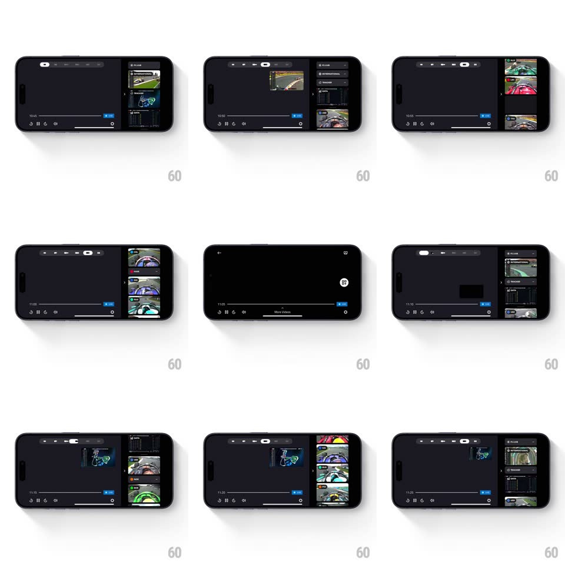

Media
Frame-by-frame

Rebuild this interaction 1:1: F1 TV's multiview - the landscape player hosts a slide-out channel rail (F1 Live, International, Tracker, Data, onboard cams), and tapping feeds tiles them into a resizable multi-feed grid beside the main video.

Rebuild this interaction 1:1: F1 TV's multiview - the landscape player hosts a slide-out channel rail (F1 Live, International, Tracker, Data, onboard cams), and tapping feeds tiles them into a resizable multi-feed grid beside the main video. ## Integration Integration: stack-agnostic spec - springs given as stiffness/damping, timed motions as duration + curve; map every value to your framework and animation library of choice. ## Scene Landscape dark player: main video area, top pill tab bar (Main, Pit Lane, Driver, Data, Tracker), right channel rail with thumbnails (F1 Live, International, Onboards, Data), bottom transport (scrubber, LIVE badge, layout icons, AirPlay). Multiview state: multiple feeds tiled - main feed large left, secondary feeds stacked right, each labeled. ## Motion spec Pattern: panel-based multiview compose, gesture-driven ~350ms. - Rail: swiping or tapping the edge handle slides the channel rail in from the right (300ms, ease-out); it overlays, not pushes. - Add: tapping a channel thumbnail lifts it (scale 1.04, 150ms) and tiles it into the layout - the main feed shrinks (400ms, ease-in-out) as the new feed slides into the freed slot (300ms). - Rearrange: dragging a feed swaps positions with its neighbor, both animating to their new rects (350ms, ease-in-out); other feeds hold. - Remove: tapping a feed's close shrinks it out (250ms) as the remaining feeds re-expand to fill (350ms). ## Calibration - Feeds keep 16:9 aspect in every tile - letterbox inside the slot, never crop. - The transport bar auto-hides after 3s and reappears on tap (250ms fade). ## Reduced motion Feeds snap into slots with 200ms fades; rail fades in. ## Don't miss - Onboard feeds carry driver name tags (VER, NOR...) on their thumbnails. - The scrubber stays live across layout changes - playback never pauses for a rearrange.